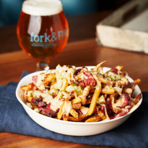

How to make: Pastrami Fries

Pastrami fries are a fan favorite on The Boardwalk
Ingredients
<<<<<<< HEAD
Instructions
- Preheat oven to 400 degrees.
- Put fries in bowl. Be sure to not over fry them, later we will put them in the oven
in a later step so over cooking them now will only get worse.
- Top fries with cheese.
- Top fries with pickles.
- Cut pastrami into small approx. 1"x1" cubes.
- Top with saurkraut.
- Place in oven for 8 minutes.
- Remove from oven and drizzle with 1000 island.
=======
Instructions
- Preheat oven to 400 degrees.
- Put fries in bowl. Be sure to not over fry them, later we will put them in the oven in a later step so over cooking them now will only get worse.
- Top fries with cheese.
- Top fries with pickles.
- Cut pastrami into small approx. 1"x1" cubes.
- Top with saurkraut.
- Place in oven for 8 minutes.
- Remove from oven and drizzle with 1000 island.
>>>>>>> 3f96d71966734fd9b4356acb7217d7cf1736eaa1